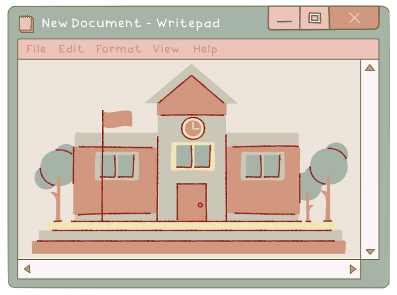
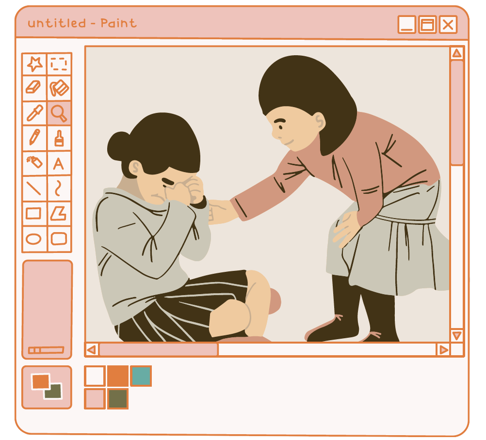

The Types of Agents of Socialization |
||
| Name of Agent | Picture of the Agent | Description about the Agent |
|---|---|---|
| Family |  |
The family represents a child's first emotional tie, and it is by far the most significant agent of the socialization process. Infants are entirely reliant on other people to survive, and the parents assume the role of guiding them to be able to care for themselves. Parents or guardians provide children with their initial system of beliefs, norms, and values and the system are based on their ethnic community, social status, and religion among other factors. The system that parents inculcate on children normally has a profound effect throughout their lives. Social class has been identified as a critical factor in the socialization process. Melvin Kohn (1965, 1977) expounded on the reasons why middle and working class parents socialized their children in different ways. Working class parents possess less education and do more repetitive work duties with little autonomy, and therefore obedience is a necessary virtue, and they pass this to the other generation. Middle-class parents, on the other hand, hold white-collar jobs where creativity and independent thought are encouraged and they pass these values to their children. |
| School |  |
Most children are enrolled in schools for the primary purpose of acquiring education. The institutions socialize children in various ways. First, the children are instructed on a formal curriculum, a system informally known as reading, writing, and arithmetic. Teachers represent the school's authority figures, and they continually reinforce school values and other established practices to inculcate obedience. Sociologists have named this system of enforcing societal values on children as the hidden curriculum. When children are grouped to engage in a project, for example, they learn the significance of teamwork and cooperation. The role of the hidden curriculum is to mold children for the adult world. The children learn how to manage expectations, regulations, bureaucracy, and sitting still for several hours. The way in which schools socialize pupils differs from culture to culture. |
| Peers |  |
Peer groups are made up of age mates and those children who share a similar status. Peer groups enable children to form bonds on their terms and they learn from each other without an authority figure present. Peer group socialization commences in a child's formative years such as when kids playing in a playground learn the aspect of taking turns. A child's initial peer circle may be accidental such as, by way of joining a class, but they become intentional in their choice of peers as they mature. As one approaches adolescence, peer group centers around similar interests, activities, and status. A peer group impacts on a person's choice for things like fashion trends, appearance, relationships, music, drugs and drug use, sex, and technology. Peers rely on each other for companionship, emotional support, and fun. However, peer circles are negatively associated with peer pressure. This situation occurs when a peer group encourages an individual to violate societal values. The influence of peers declines as a person reaches their 20s and 30s particularly if they start a family. This influence does not ultimately diminish as married couples, particularly those with young kids, meet, and socialize. |
| Mass Media |
The aspects of mass media include television programs, magazines, radio, websites, music, and movies. These aspects have been shown to influence an individual's preferences in popular culture. Sociologists agree that the extent of the influence of mass media is hard to measure. Mass media relays impersonal information in a one-way direction to a passive audience. Commercials significantly impact our choices of retail products such as clothing, food, and household items. The media is always criticized for exposing children and young adults to negative scenarios. In today's world, the average child soaks in thousands of violent acts shown on television before attaining adulthood. Various studies have reported a strong correlation between watching violent movies and shows, and committing violent acts although watching such shows does not always result in violence. Scholars are continuously engaged in a debate over the link between media violence and violence perpetrated by the youths. The perceived correlation has triggered calls by societal groups for the censoring and even the banning of particular acts of violence. Mass media empowers its audience by giving them wider information not only about their particular territory of residence but also the entire world. |
|